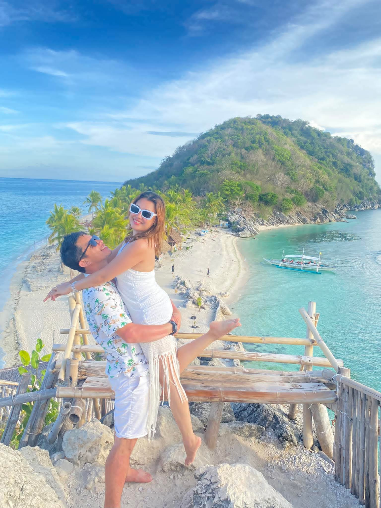

Welcome to Seaview Rest House |
|||
| HOME | EVENTS | CONTACT US | SERVICES |
|
Make memories that last a lifetime in a place where comfort meets elegance and the only thing you need to worry about… is how long you can stay. |
|||
🏠 Background & History- It is a Homestay located at Lower Becerril, Boljoon, Cebu (6024)- Along Natalio Bacalso Avenue (National Road) - Founded by Sheryll Ann Adlawan - Newly opened February this year |
|||
👩 Meet the Owner Born: March 3, 1990 Age: 35 years old Status: Happily married to Darwin Adlawan Family: Closely connected to her husband’s family |
|||
⚡ Feature Story: Challenges FacedSeaview Rest House’s journey was not without hurdles. From the very beginning, Sheryll Ann Adlawan faced the challenge of building a reputation from scratch, with limited resources and no marketing budget. Securing reliable staff, managing operations, and ensuring consistent quality of service were constant tests of patience and resilience.Additionally, unforeseen events such as seasonal fluctuations in tourist arrivals, maintenance issues, and adapting to changing guest expectations required creative solutions and flexibility. Each obstacle, however, became a lesson that strengthened the business’s foundation. Through persistence, innovation, and the unwavering support of the local community, Seaview Rest House overcame these challenges and turned them into stepping stones toward growth and excellence. |
|||
🌅 Feature Story: How Seaview Rest House SucceededSeaview Rest House began as a simple dream—a place where families, travelers, and friends could find peace by the shore. When Sheryll Ann Adlawan first opened its doors, she had no team, no big budget, and no guarantee that guests would come. What she did have, however, was a clear vision: to create a warm, homelike sanctuary with the beauty of Boljoon's coastline as its centerpiece.Word of mouth became Seaview’s greatest strength. Every guest who stayed left with unforgettable memories—sunrise mornings, quiet nights, and the gentle hospitality that Sheryll personally offered. Slowly, the homestay began gaining attention on social media. Visitors shared photos, reviews, and stories, bringing more people who wanted the same experience. Today, Seaview Rest House stands as one of Boljoon’s most charming staycation spots. What was once a humble idea has grown into a beloved destination, proving that with passion, hard work, and genuine care, even the smallest beginnings can lead to the brightest success. |
|||
🔮 Vision for the FutureIn ten years, I envision Seaview Rest House as a premier coastal destination in Boljoon, widely recognized for its exceptional hospitality, serene and comfortable accommodations, and memorable experiences that guests cherish. I see the business expanding thoughtfully, with upgraded rooms, event spaces, and eco-friendly amenities, all while maintaining the personal touch and warmth that made it special from the start.Our strong ties with the local community will continue to grow, supporting local artisans, staff, and tourism initiatives, ensuring the business not only thrives economically but also enriches lives and preserves the beauty and culture of Boljoon for generations to come. |
|||
💬 Message from the Owner |
|||
🇵🇭 How the Government Helped the Business GrowThe Government of the Philippines contributed to the growth of Seaview Rest House by streamlining the process of permits and registration, enabling the business to operate legally and confidently. Through the local government unit, the business received guidance, tourism promotion, and occasional training programs that enhanced service quality and overall business management. Improvements in roads, utilities, and public safety also made the location more accessible and attractive to visitors, helping Seaview Rest House steadily gain more guests over time. |
|||